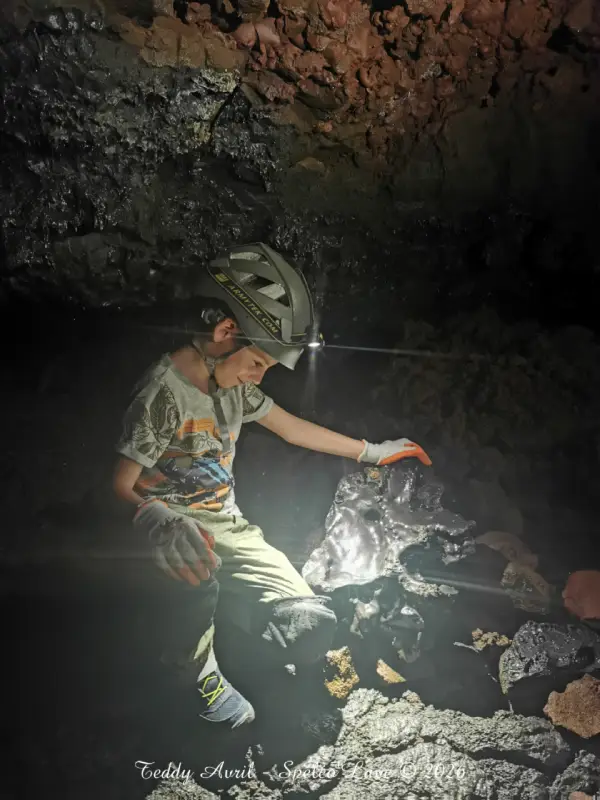

L’exploration « Découverte »
- Durée3h
- Âgedès 8 ans
- Tarif55 euros
Explorer un tunnel de lave, c’est découvrir un environnement qui paraît irréel ! Pour cette exploration « Découverte », le but est surtout d’observer de nombreuses et belles curiosités volcaniques dans des portions assez larges du tunnel de lave.
Vous prenez le temps de comprendre le fonctionnement de notre incroyable volcan : le Piton de la Fournaise. C’est la sortie accessible au plus grand nombre : idéale pour une première approche du milieu, ou si vous préférez faire une exploration tranquille en prenant le temps de contempler et de rêver un peu.
Caractéristiques et tarifs
Sortie familiale, enfants à partir de 8 ans.
Il faut juste pouvoir se déplacer un peu accroupi et marcher un peu à quatre pattes, avec de bonnes genouillères, sur quelques mètres. Les genouillères sont fournies lors de la prestation.
55 euros par personne. Enfant de moins de 14 ans : 35 euros.
Il est également possible de privatiser l’encadrement si vous souhaitez avoir le guide rien que pour vous !